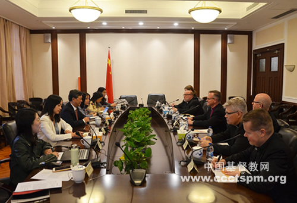
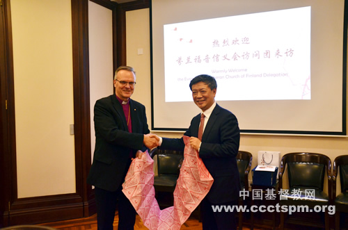

On the afternoon of November 20, 2019, Rev. Wu Wei, president of CCC received the Most Rev. Dr. Tapio Luoma, archbishop of the Lutheran Evangelical Church of Finland and six other delegates. It was the first time that Archbishop Luoma had paid a visit to China after his inauguration. The two sides had exchange over social services, media ministries, and other topics of interest.
On behalf of CCC&TSPM, Rev. Wu Wei first extended welcome towards the guests. He appreciated the support and prayers from the Church in Finland in the aspects of Bible printing and theological education ministries. Rev. Wu introduced the progress and challenges facing the Church in China, and accentuated the importance of upholding the Three-self principles and the indigenization and contextualization of Christianity in China.
He said that the church should consider the role to bear witness for Jesus in the society. Also, there is a higher demand for each and every Christian in such a diversified society. When we proclaim our Christian faith, we manage to integrate it with traditional culture and also are required to cultivate a large amount of qualified talents.

Despite the geological and cultural differences, Rev. Wu mentioned that God’s love and our common faith in Him is the bond that makes us become connected with each other. He wished that both sides could continue to maintain a close relationship in facilitating cooperation, sharing, exchange and friendship.
Archbishop Tapio Luoma gave thanks to CCC&TSPM for the invitation and the warm welcome. He saw this visit being of great importance. A few days’ earlier, through the visits to Beijing and Nanjing, the delegation has had a deeper understanding of the indigenization and contextualization of Christianity in China. They were touched to see the testimonies like the 200 million copy of Bible printed in the Amity Printing and the Bible hand-copying activity among clergies in Beijing, making the delegates rethink the significance of contextualization via the visits.
Archbishop Tapio Luoma reckoned that the church should be adaptable to the context and culture as “the Word became flesh” descending into this world. He also shared a few topics that Finland churches are attaching importance to: the role of the church in the society, the relations between church and government, current situation that the church is facing with, etc.
He expected to have more chances of reciprocal visits and cooperation.

At the meeting, staff members of CCC&TSPM introduced the ministries in social services by Chinese churches, along with the current situation and challenges facing media ministries. The guests later raised questions about how do social services in making a difference in the society, the problems that the Church in China needs to deal with in the post-denominational era, the relations between different religions, etc.
The two sides had a discussion on the ways to further the cooperation on theological education, social services and Bible printing ministries. Archbishop Tapio Louma also offered an invitation to Rev. Wu Wei and other leaders of Christianity in China to visit Finland churches with the aim of fostering mutual friendship and cooperation.
Ms. Gu Jingqin, interim chief of Overseas Relations Department of CCC&TSPM, Ms. Chen Hongli, director of the Media Department, Ms. Cao Yanan, director of the Social Service Department, and Miss Gong Zhoujin, staff member of Overseas Relations Department participated in the reception.


 Wap
Wap
 APP
APP